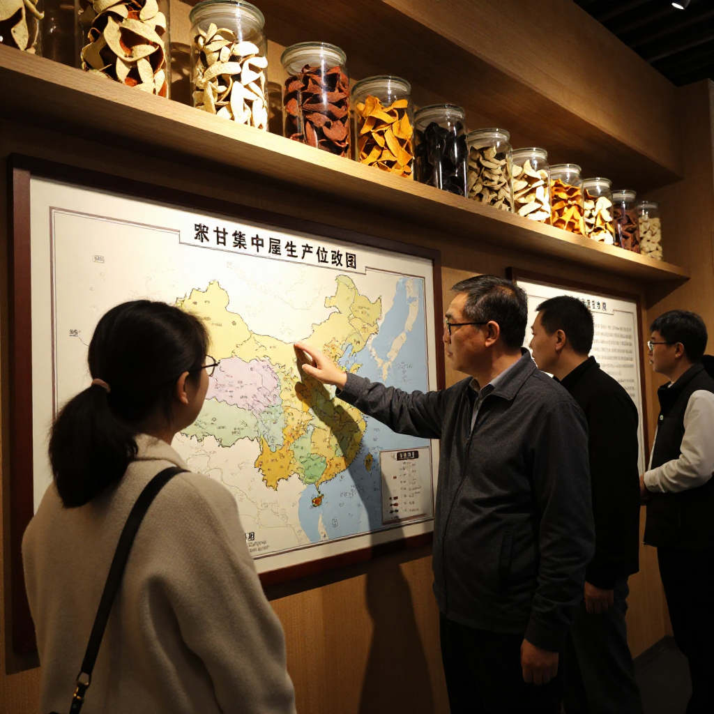
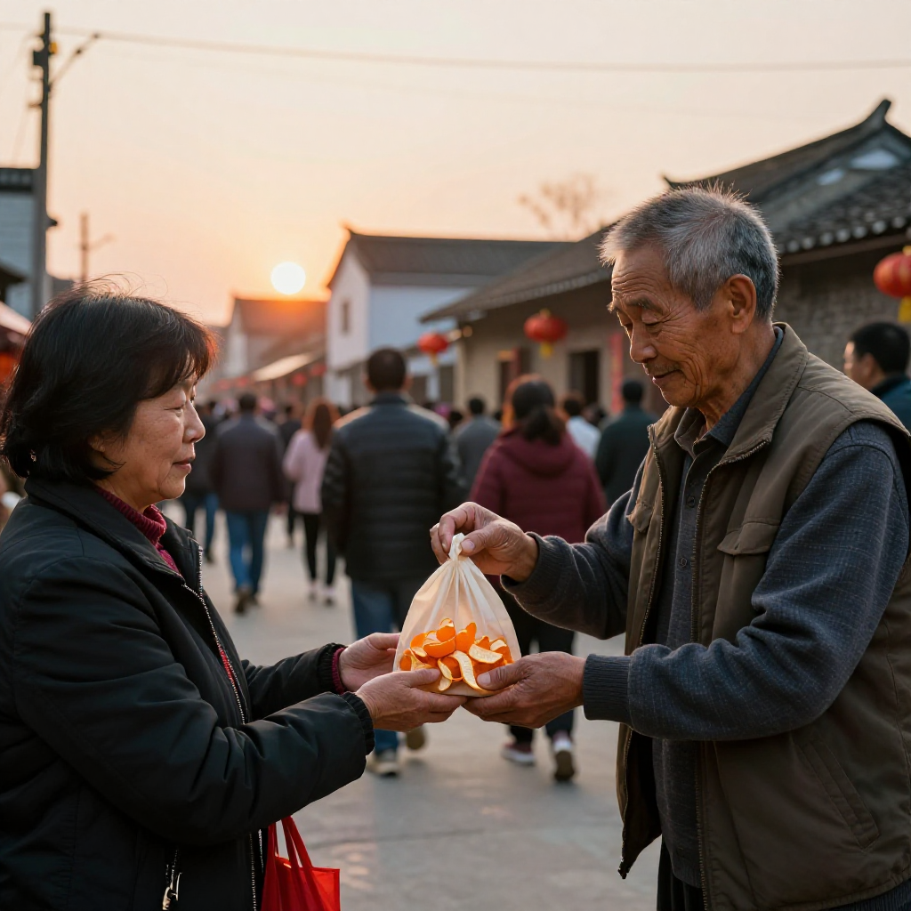

9月28日，2026陳皮村新會柑農豐收節暨新會陳皮預售季啟動儀式在新會陳皮村舉行。新會區農業農村局、區市場監督管理局、新會海關綜合技術服務中心等部門代表，以及全國各地渠道商、代理商、金融機構和新會果農、商戶共同參加。據南方農村報報道，2025年新會陳皮全產業鏈總產值達283億元，帶動超8萬人就業創業；陳皮村平台年接待遊客逾百萬人次，帶動銷售收入突破6.2億元。
國慶黃金周期間，陳皮村還設置了十一鎮（街）鮮果展銷區；飛豬數據顯示，國慶假期首日國內門票預訂量同比增長近30%（據證券時報報道），鄉村與小城迎來大批遊客。這樣的熱鬧裡，我在豐收節現場遇見了三個人。
一、豐收節的早晨：明仔的大紅花
清晨的新會，空氣裡帶着一股濕潤的泥土香。我開車沿着鄉道往陳皮村走，遠遠就看見村口搭起了紅色拱門，鑼鼓聲隱約傳來。
「滢滢姐！呢邊，呢邊！」
明仔站在陳皮交易中心門口朝我招手。這小伙子二十出頭，去年剛辭了城裡的工作，跑回來幫家裡打理陳皮生意。他今天穿得特別精神，胸口還別了一朵大紅花。
「今年豐收節搞得好熱鬧。聽講陳皮村連續第九年搞預售，連京東物流都嚟合作監管倉，仲有六家銀行同交易共享倉簽咗金融服務合作，幾犀利。」
我笑着點頭。九年了，從第一屆到現在，這個預售季已經成了整個新會陳皮產業的風向標。走進主會場，四周掛滿橫幅——「產業聚勢，共享共贏」八個大字特別醒目。
二、梁叔的柑園回憶：老樹要養，不是催
在會場的角落，我遇見了老柑農梁叔。他今年七十三歲，皮膚被日頭曬得黝黑，精神卻很足。他種了四十多年柑，經歷了新會陳皮從無人問津到產業騰飛的整個過程。
「梁叔，今年收成點樣？」
「幾好，幾好！今年雨水均勻、日照夠，果轉紅早，糖度比舊年高。你睇——呢片係核心產區嘅老樹，幾十年嘅根，結出嚟嘅果皮最香。」
明仔湊過來看，讚嘆道：「梁叔呢片老樹皮，我家老爺子睇咗都話係寶貝。」梁叔擺擺手。
「老樹有老樹嘅好處，但都考人。管理老樹唔可以落太多肥，要畀佢自己蓄力。你哋年輕一代唔識，以為落肥多果就好——其實唔係呢個道理，老樹要養，唔係催。」
我忽然想起一件事，問他：「梁叔，您還記得九年前第一屆預售季的情形嗎？」梁叔的神情微微一怔，繼而笑了。
「記得，記得。嗰年搞預售，好多人話我傻——柑都未埋，預售邊個信？結果第一年先賣咗十幾萬。但陳皮村話，呢件事要堅持做落去，誠信係最緊要。後來一年比一年好，今年連京東物流都嚟做監管倉，幾年前想都唔敢想。」
「所以今年預售嘅主題先係『產業聚勢，共享共贏』——一個人做唔到大件事，成條產業鏈一齊做，先有今日呢個局面。」
據報道，今年8月陳皮村已與6家果圍簽訂2026年新會柑鮮果採購意向協議，計劃收購鮮果1000萬斤，提前鎖定銷路；其中古井梓富果圍約1600畝種植基地，預計達成200萬至250萬斤採購合作。此外，陳皮村與京東物流就陳皮監管倉項目達成合作，通過「交易中心＋監管倉＋權威檢測＋區塊鏈溯源」的組合方案，推動流通環節標準化。
三、陳皮村裡的知識課：鄭先生的三個問題

逛到陳皮文化展廳的時候，一位來自廣州的客人鄭先生引起了我的注意。他站在一排標着二十年的陳皮前，神情專注。
「呢隻皮點解顏色咁深？」
講解員還未答話，我已經忍不住接口：「這隻是天馬產區的皮。天馬陳皮甜香足、口感柔和，二十年轉化下來，已經有明顯的藥香，顏色深是因為年份夠、轉化夠慢。」鄭先生轉過身來，有點驚訝地打量我。我笑着自我介紹：「我係滢滢，做陳皮呢行十幾年喇。」
「陳女士，我想請教——新會陳皮點解分咁多產區？有啲皮幾百蚊一斤，有啲要幾千，區別究竟喺邊？」
這是一個好問題，也是很多客人最常問的。我帶他走到展廳的產區分佈圖前，慢慢解釋：「新會陳皮的核心產區，包括天馬、茶坑、梅江、東甲這幾個地方，各有特色——天馬皮甜香足，梅江皮油室飽滿，茶坑皮藥香好，東甲皮產量少最珍貴。非核心產區的皮，價錢相差幾倍，轉化效果同樣有分別，主要看柑樹的樹齡、種植的水土和晾曬的工藝。」
「咁如何分辨真假？」
「睇三點。第一，聞香氣——真陳皮有自然甜香，唔會刺鼻；第二，看油室——捏一下果皮表面，油室越密越飽滿，年份越足；第三，睇顏色——自然陰乾嘅老皮，顏色係由橙黃到紅褐漸變，唔會成隻黑晒，亦唔會顏色好均勻。太均勻嘅多數係烘箱快速烘乾，新會傳統講究天然生曬。」
鄭先生聽得頻頻點頭，旁邊的明仔也在認真記。梁叔不知何時走了過來，拍了拍明仔的肩膀。
「明仔，你話做陳皮最難係乜嘢？」
「搵客源？定係保存？」
「都唔係。係建立信任。你睇今年豐收節，幾百人嚟，唔係個個都識分辨陳皮；但只要你嚟陳皮村，買到嘅皮有標準、有溯源，唔使驚走寶——先叫做真正嘅產業聚勢。京東物流合作監管倉，就係為咗讓大家買到嘅皮，由新會寄出去嘅每一箱都有跡可循。」
我接過話頭：「所以我哋做陳皮文化傳播，最要緊嘅唔係話陳皮有幾值錢，而係講清楚點解佢值錢、值邊個嘅錢。呢個先係真正嘅傳承。」
四、離開前的約定：一袋頭產果皮

太陽落山的時候，人群漸漸散去。我在陳皮村的門口，和明仔、梁叔道別。
「滢滢姐，你篇文章寫完，記得 send 畀我睇下喔。」
「一定。」我笑着應了。梁叔從口袋裡掏出一小袋東西，塞到我手裡。
「呢啲係今年新會柑嘅頭產果皮樣本，你帶返去研究下。今年預售季由宜家開始，一直賣到十一月，你哋鍾意陳皮嘅朋友，唔好錯過呢個時候。」
我接過袋子，感覺沉甸甸的。這不只是一袋果皮，這是一個老柑農四十多年經驗的濃縮，也是整個新會陳皮產業九年來堅持的縮影。
「產業聚勢，共享共贏」——這八個字，我今日終於有了更深的理解。活動現場，陳皮村柑桔合作社還聯合市場經營商戶共同發起《新會陳皮商戶誠信經營·預售季品質守護倡議書》；深圳海王星辰、山西汾州府露酒科技、上海光締投資管理等多家渠道商、代理商也與陳皮村完成集中採購簽約。熱鬧之外，這些落地的合同與倡議，才是豐收節真正的分量。
常見問題
新會柑農豐收節每年什麼時候舉辦？一般在每年9月下旬至10月上旬舉行，與新會柑採收季同步。2026年的豐收節暨新會陳皮預售季啟動儀式於9月28日在新會陳皮村舉行，預售季延續至11月，是購買當年新會柑皮的主要時段。
陳皮村的預售活動可靠嗎？品質怎麼保證？陳皮村已連續第九年舉辦預售活動，設有標準化交易共享倉與「四標認證」體系。今年與京東物流就陳皮監管倉項目達成合作，採「交易中心＋監管倉＋權威檢測＋區塊鏈溯源」方案；江門農商銀行、郵儲銀行、工商銀行、農業銀行、建設銀行、交通銀行等六家金融機構亦與交易共享倉達成金融服務合作。
新會陳皮核心產區有什麼區別？核心產區包括天馬、茶坑、梅江、東甲等。天馬皮甜香著稱，適合日常食用；茶坑皮藥香突出，適合入藥；梅江皮油室飽滿，轉化潛力好；東甲皮產量稀少，最為珍貴。各產區在香氣、口感與價格上均有差異，選購時可依需求與預算綜合判斷。
如何辨別優質新會陳皮與假冒陳皮？三大特徵：一聞香氣，自然甜香不刺鼻；二看油室，捏果皮表面，油室密集飽滿表示年份充足；三看顏色，自然陰乾的皮由橙黃到紅褐漸變，不會全黑，也不會顏色過於均勻。快速烘乾的皮外觀漂亮，但轉化價值遠低於傳統生曬。
新手收藏陳皮應該從多少年份開始？建議從三年至五年開始，價格相對適中、轉化特徵已開始顯現，適合學習辨識不同產區與年份的香氣、口感差異。存放需控制溫度濕度，避免受潮發霉，建議用透氣性好的麻袋或陶罐。
國慶假期來陳皮村，能看到什麼？國慶黃金周期間，陳皮村設置十一鎮（街）鮮果展銷區，集中展示新會各產區優質鮮果；新會陳皮村南門牌坊G04滢滢姐的店裡常年備着熱茶，可當面看皮、免費試喝。
結語
一場豐收節，台上是簽約與倡議，台下是一個個具體的人：二十出頭回鄉的明仔、種柑四十多年的梁叔、專程從廣州來的鄭先生。產業聚勢說起來很大，落到實處就是——有人願意回來，有人願意教，有人願意問。
國慶假期想來逛一逛，來新會陳皮村南門牌坊G04找滢滢姐坐坐，店裡常年備着熱茶。想看預售季的完整運作方式，看這篇《第九屆陳皮村預售季啟動：產業聚勢·共享共贏》；想學會在直播間避坑，翻翻這篇《新會陳皮的時光之味：如何在亂象中尋得一片真陳皮》。
下期預告：十一月預售季進入尾聲，滢滢姐會把今年各產區的頭產果皮樣本擺在一起做一次橫向對比——天馬、茶坑、梅江、東甲，同一年的果，香氣與價格差多少，一期講清楚。